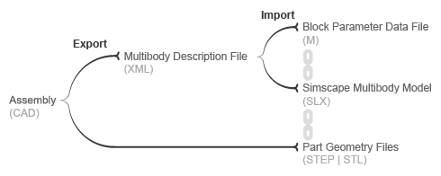
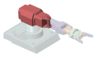
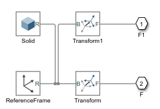
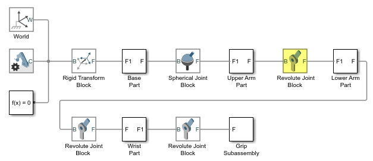
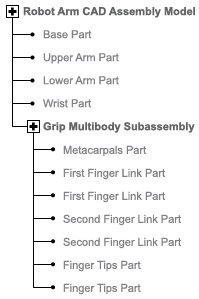
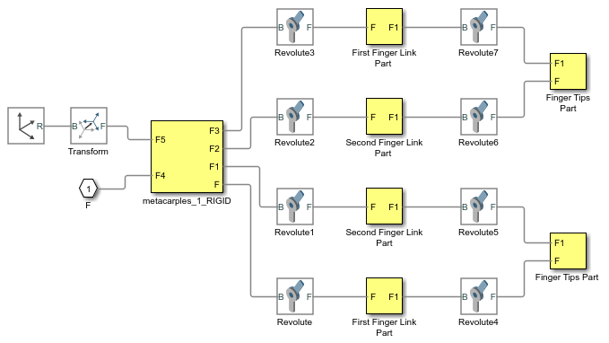
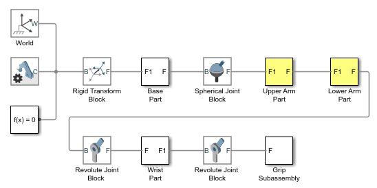
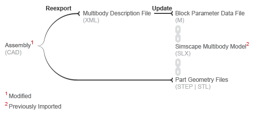

You can translate a CAD model into an equivalent Simscape™
Multibody™ block diagram. The conversion relies on the smimport function featuring an XML multibody description file name as
its central argument. The XML file passes to Simscape
Multibody software the data it needs to recreate the original model—or an
approximation of it if unsupported constraints exist in the model.
You translate a CAD model in two steps—export and import. The export step converts the CAD assembly model into an XML multibody description file and a set of STEP or STL part geometry files. The import step converts the multibody description and part geometry files into an SLX Simscape Multibody model and an M data file. The model obtains all block parameter inputs from the data file.
CAD Translation Steps

The translated model represents the CAD parts—referred to as bodies in Simscape Multibody software—using Simulink® subsystems that comprise multiple solid and Rigid Transform blocks. The solid blocks provide the body geometries, inertias, and colors. The Rigid Transform blocks provide the frames with the required poses for connection between bodies.

Consider the upper arm body of a CAD robotic arm model, shown in the figure. The Simulink subsystem for this body consists of one solid block connected to a pair of Rigid Transform blocks. The Solid block provides the reference to the upper arm geometry file and the inertial properties derived from the CAD model. The Rigid Transform blocks provide the frames for connection to the robot base and lower arm bodies.
Simulink Subsystem Representing Upper Arm Body

CAD joints, constraints, and mates translate into Simscape Multibody software as combinations of joint and constraint blocks. In the CAD robotic arm example, the constraints between the upper arm and the lower arm translate into a Revolute Joint block. This block sits between the Simulink Subsystem blocks that represent the upper arm and lower arm bodies.
Simulink Subsystem Representing Upper Arm Body

By default, the translated model preserves the structural hierarchy of the original CAD model. If the source model is a CAD model with multibody subassemblies, the subassemblies convert in Simscape Multibody software into multibody Simulink subsystems. Consider again the CAD robotic arm model. The model contains a grip multibody subassembly with seven bodies, shown schematically in the figure.
CAD Robotic Arm Model Hierarchy

Multibody Simulink Subsystem with Body Simulink Subsystems

Blocks in the translated model are parameterized in terms of MATLAB® variables defined in the data file. These variables are stored in
structure arrays named after the various block types. The structure arrays are nested in
a parent data structure named smiData or a custom string that you
specify.
Consider an imported model with a data structure named smiData. If
the model contains Revolute Joint blocks, the parameter data for
these blocks is the structure array smiData.RevoluteJoint. This
structure array contains a number of data fields, each corresponding to a different
block parameter.
The structure array fields are named after the block parameters. For example, the
position state target data for the Revolute Joint blocks is in a field
named Rz_Position_Target. If the model has two Revolute Joint blocks,
this field contains two
entries—smiData.RevoluteJoint(1).Rz_Position_Target and
smiData.RevoluteJoint(2).Rz_Position_target.
Each structure array index corresponds to a specific block in the imported model. The
index assignments can change if you regenerate a data file from an updated XML multibody
description file. The smimport function checks the prior data
file, when specified, to ensure the index assignments remain the same. See Updating an Existing Data File.
You can technically export a CAD assembly model from any CAD application. The Simscape Multibody Link CAD plug-in provides one means to export a model in a valid XML format. The plug-in is compatible with three desktop CAD applications: SolidWorks®, PTC® Creo™, and Autodesk® Inventor®. The plug-in generates not only the XML multibody description file but also any geometry files required for visualization in the final translated model.
The Simscape
Multibody
smexportonshape function provides another means to export a CAD model,
from a cloud application named Onshape®. This function exports in a format compatible with the newer Simscape
Multibody blocks only. See Onshape Import for more
information on exporting (and importing) CAD models from an Onshape account.
If you use an unsupported CAD application, you can create a program that uses the CAD API and Simscape Multibody XML schema to generate the multibody description and part geometry files. This task requires knowledge of XML documents, XSD schema definitions, and CAD APIs. See the schema website for the XSD schema definitions. See MATLAB Central for an example program built on the SolidWorks CAD API.
If a URDF converter exists for your CAD application, you may be able to export your model in URDF format and import the URDF file into the Simscape Multibody environment. Note, however, that the URDF specification forbids closed-chain model topologies, such as those of four-bar linkages and gear assemblies. For more information, see URDF Import.
If the Simscape Multibody Link plug-in cannot export a part geometry file or translate a CAD constraint set, the software issues an error message. The error message identifies the bodies with missing geometry files and any unsupported constraints. You can import the generated XML multibody description file into Simscape Multibody software, but the resulting model may not accurately represent the original CAD assembly model.
You import an XML multibody description file using the Simscape
Multibody
smimport function in its default import mode. The function parses the
file and generates a Simscape
Multibody model and associated data file. For step-by-step instructions on to import
a CAD assembly model via its XML multibody description file, see Import a CAD Assembly Model.
Note
Starting with software version R2017b, the Simscape
Multibody Link plug-in exports in an XML format compatible only with Simscape
Multibody Second Generation software. You must import all such XML files using
the smimport function. Models generated
with this function comprise only second-generation blocks—those accessible by
entering the command sm_lib at the MATLAB command prompt.
The Simscape
Multibody First Generation software is not supported anymore and the
mech_import function can not be used anymore.
If a part geometry file is invalid or missing, the corresponding body cannot show in the Simscape Multibody visualization utility. If a CAD assembly model contains an unsupported constraint combination between bodies, Simscape Multibody software joins the bodies with a rigid connection. The rigid connection can take the form of a direct frame connection line, Rigid Transform block, or Weld Joint block.
Rigid Connection Due to Unsupported Constraints

If Simscape Multibody software cannot translate a CAD constraint combination, it issues a warning message on the MATLAB command window identifying the affected bodies and their connection frames. For example:
Warning: The set of constraints between upperarm_1_RIGID and forearm_1_RIGID could not be mapped to a joint. A rigid connection has been added between port F of upperarm_1_RIGID and port F1 or forearm_1_RIGID for these constraints.
You can import a CAD model with a simplified topology. So that you can do this, the
smimport function provides the
ModelSimplification argument. You can set this argument to:
bringJointsToTop to group each set of rigidly connected
parts into a new subsystem and promote all joints to the top level of the
model hierarchy.
groupRigidBodies to group rigidly connected parts into
subsystems (and leave joints in their original places in the model
hierarchy).
None to import the model as is, without
simplification.
Use the bringJointsToTop or groupRigidBodies
option if your CAD model has many rigidly connected components, such as nuts and bolts,
that you prefer to group together—for example, to more intuitively grasp the key
components of the model at a glance of the block diagram.
Use the bringJointsToTop option if your CAD model has joints inside
subassemblies and you prefer to expose them at the top level—for example, to work with
joint actuation and sensing signals without having to search for the joints inside
different subsystems.
Note that model simplification is available for CAD import only. URDF models have flat topologies with little need for simplification.
You regenerate the data file for a previously imported model by running the smimport function in dataFile mode. You specify
this mode using the optional ImportMode
Name,Value pair argument. The function uses the prior data file to
keep the mapping between structure array indices and blocks consistent.
Before regenerating a data file, you must export a new XML multibody description file
from the updated CAD assembly model. The smimport function uses the
data in the new multibody description file to generate the new data file.
The function does not update the block diagram when run in
dataFile mode. If you add or delete bodies in the source CAD
assembly model, you must manually add or delete the corresponding blocks in the
previously imported model.
CAD Update
